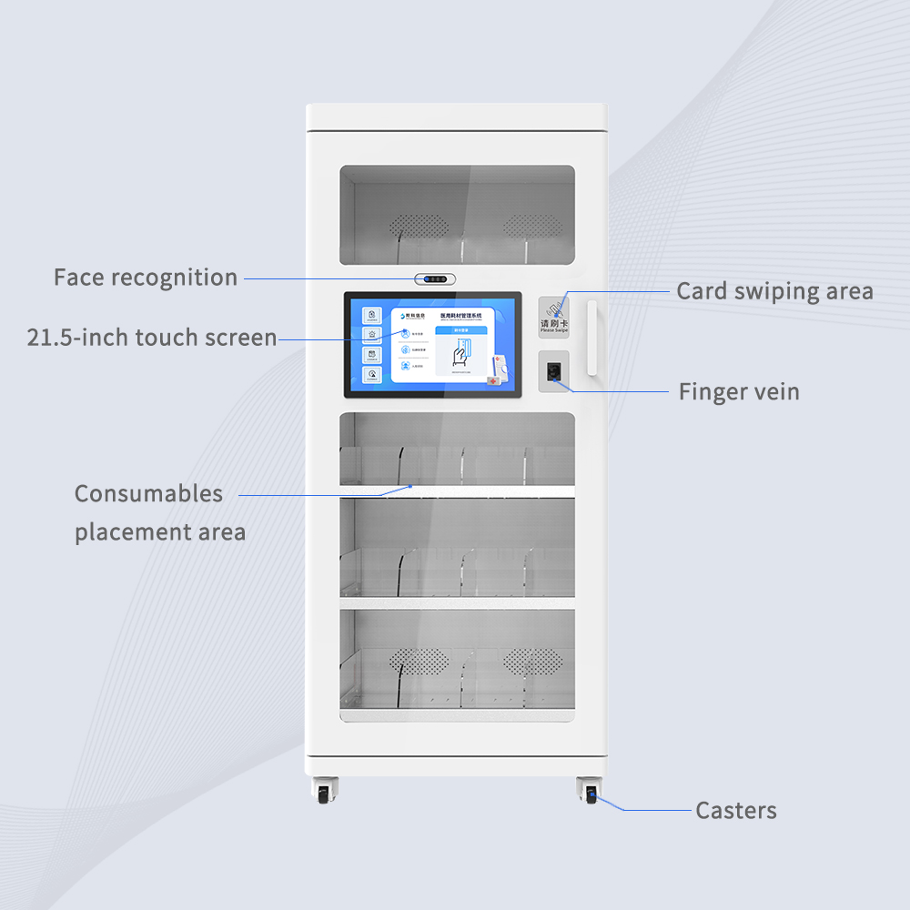
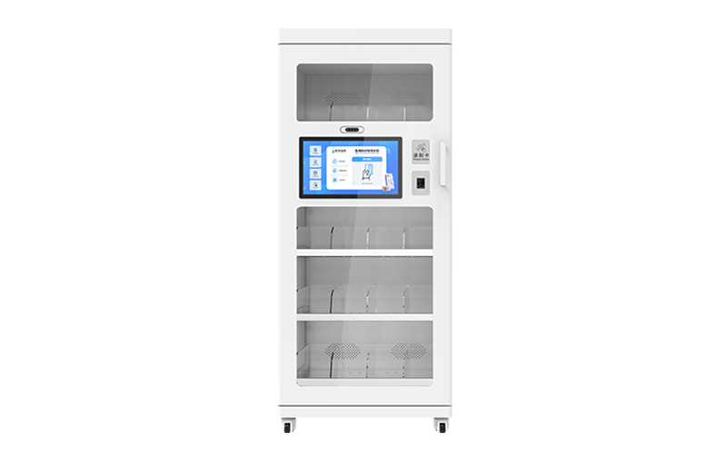
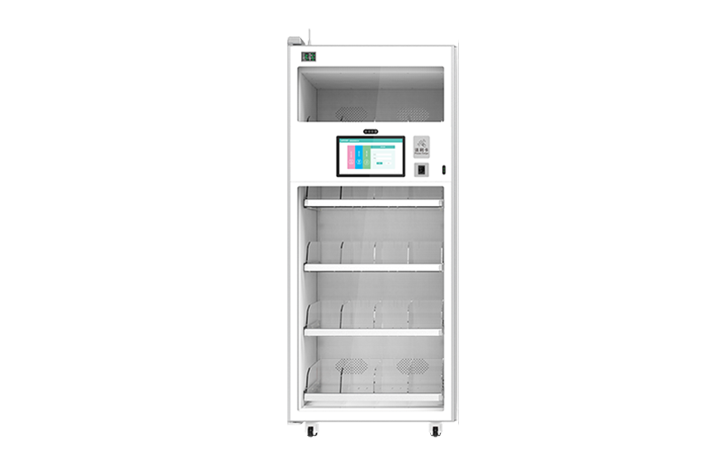
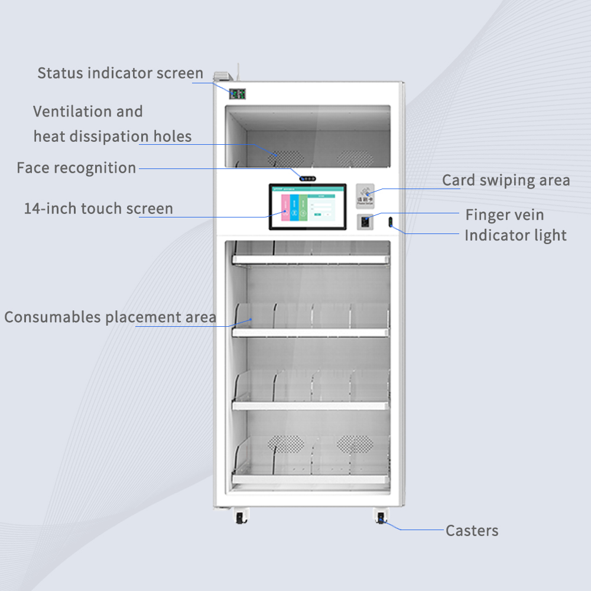

CYKEO-GY1B
Medical RFID Cabinet
Almacenamiento con pantalla táctil para activos médicos críticos
- Pantalla táctil HD de 21.5″ (Windows / Android)
- Capacidad de 400 unidades
- Acceso por RFID, huella o rostro
- Cumplimiento HIPAA / GMP
Distribución oficial Cykeo RFID en Argentina · Stock disponible · Solicitar demo
Gabinetes RFID Médicos
Trazabilidad en tiempo real para quirófanos, farmacias y laboratorios. Distribución oficial Cykeo en Argentina.


Cumplimiento normativo
TRACE CADA ITEM, CONFÍE EN CADA ESCANEO
Los gabinetes Cykeo mantienen los insumos quirúrgicos, implantes y consumibles de alto valor bajo control permanente. La tecnología RFID UHF escanea el contenido completo en segundos, el inventario es visible al instante y el acceso se libera por huella, tarjeta o reconocimiento facial. Chasis de acero pensado para quirófanos, farmacias y depósitos de ensayos clínicos. Conectividad WiFi y 4G que mantiene las alertas activas: siempre se sabe qué entra y qué sale. Sin faltantes, sin pérdidas, control directo.
Dos modelos, una plataforma
Misma ingeniería Cykeo, dos formatos. El modelo grande para alto volumen; el compacto para espacios reducidos.

CYKEO-GY1B
Almacenamiento con pantalla táctil para activos médicos críticos

CYKEO-GY1A
Gestión de consumibles quirúrgicos en tiempo real con precisión IoT
Características clave
Sistema de 300W con respaldo UPS que sostiene 8 horas de autonomía ante cortes, crítico para cirugías de guardia.
Chipset Impinj R2000 identifica 800+ items por estante, EPC C1G2 / ISO 18000-6C, con alcance de 6 m y hasta 1.000 tags por minuto.
Machine learning pronostica la reposición usando 12 meses de consumo e integración con sistemas ERP, reduciendo el sobrestock hasta 35%.
Acceso por vena del dedo más tarjeta RFID con trazas de auditoría, cumpliendo FDA 21 CFR Part 11 para sustancias controladas.
Interfaces HL7/FHIR sincronizan con Epic, Cerner y demás EMR, preparando kits por caso con datos clínicos en tiempo real.
Cámaras duales 1080p registran cada retiro con marcas de tiempo cifradas SHA-256 almacenadas en Hyperledger. Trazabilidad inmutable.
Chasis de acero al carbonio de 1.2 mm soporta 200 kg de carga, con certificación IP54 para descontaminación y lavados de quirófano.
RFID híbrido + código de barras (Code128/QR) para sistemas legacy. SDK en Java y C# para integraciones a medida.
Desde el primer escaneo, cada insumo queda registrado. Cada retiro, trazado. Cada alerta, accionable. Eso es control.
Ficha técnica
* El rendimiento del producto se basa en pruebas en ambiente controlado. Los resultados reales pueden variar según las condiciones de instalación.
Cuéntenos los requisitos de su institución. Le enviamos una propuesta adaptada en menos de 24 horas hábiles.
Preguntas frecuentes
La pantalla de 21.5″ funciona como centro de control. El escaneo completo del inventario se completa en segundos. Los insumos vencidos aparecen destacados en pantalla. Incluso es posible asignar items a cirujanos específicos mediante sus tarjetas RFID. Un hospital de referencia redujo el tiempo de preparación de quirófano en 40% usando este sistema, con todos los reportes de uso de implantes generados de forma automática y conforme a HIPAA, sin documentación adicional.
Sí. Varios recursos lo hacen confiable: antenas sintonizadas para leer a través de vidrio de 12 mm, etiquetas RFID anti-metal específicas para implantes, y amplificación de señal que se activa cuando el gabinete detecta proximidad. Los hospitales que instalaron el sistema reportan más de 99% de precisión, incluso escaneando cientos de implantes de titanio sin necesidad de abrir las puertas.
Por capas. Los escaneos biométricos limitan el acceso al personal autorizado, todo queda registrado en memoria cifrada y la información del paciente se enmascara automáticamente en los reportes exportados. Una clínica que realizó una auditoría interna salió sin observaciones, con cero incumplimientos. El sistema está diseñado para soportar auditorías bajo FDA 21 CFR Part 11 y normas locales equivalentes.
Aplicaciones Cykeo RFID
La misma tecnología Cykeo que protege insumos médicos también opera en logística, manufactura y energía.
0 precisión de stock
Escaneo masivo a 20 metros de distancia.
0 unidades/hora
Cross-docking de alta velocidad.
0 menos tiempo de búsqueda
Recuperación inmediata del instrumental.
0 menos errores de preparación
Control de insumos críticos en tiempo real.
0 unidades/min
Líneas de producción a 99,97% de precisión.
0 monitoreo continuo
Activos críticos siempre localizables.
0 menos mermas
Reducción de pérdidas de inventario.
Hablemos
Complete el formulario y un asesor de IDInteligentes responde en el día. Atendemos hospitales, clínicas y laboratorios en todo el país.